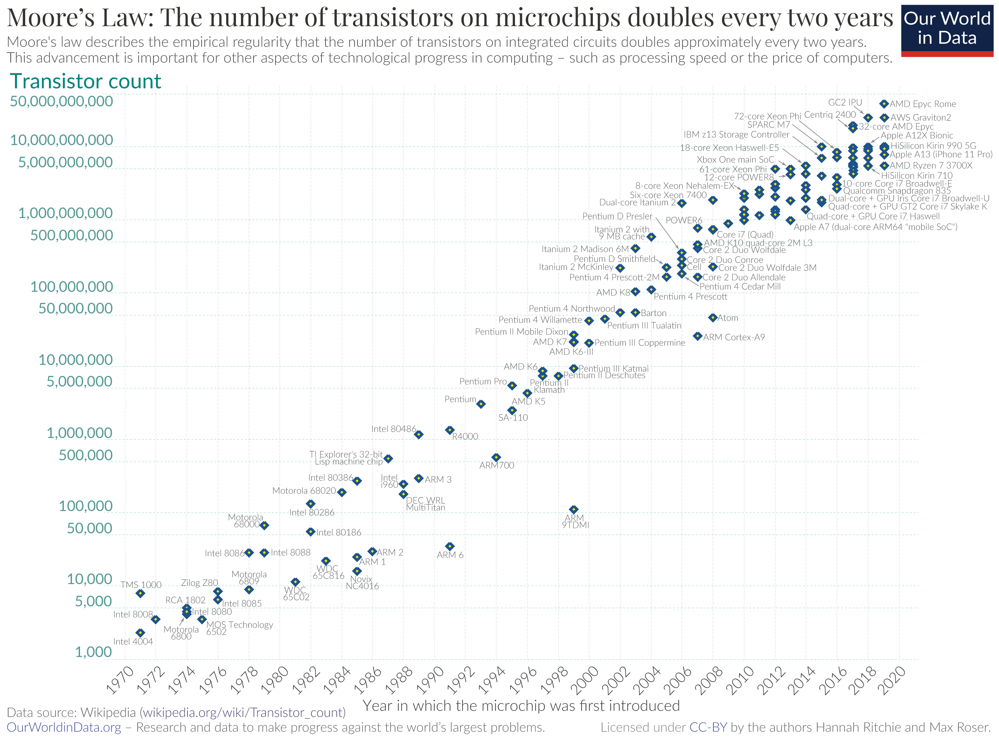
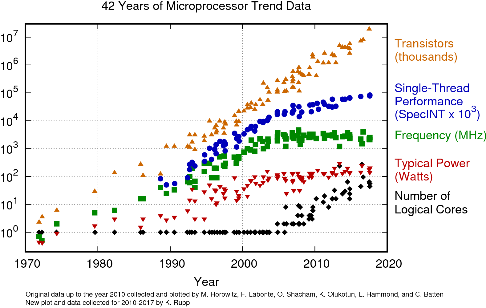

4 · Course RoadmapThe toolset & what you'll be able to do.
ThemePerformance now comes from more cores, not faster ones — so you have to program them.
What Is a Parallel System?
Working definition
Many processing elements + a memory system + an interconnect + a software stack that cooperate on one problem — to finish faster, or to solve something bigger.
It's not just the hardware, and not just the algorithm — it's the whole stack working together.
2 · The underlying systemMemory hierarchy, caches, interconnect, architecture — why code runs fast or slow.
3 · Evaluate & scalePerformance, communication, I/O, fault tolerance — making it actually scale.
These three pillars are exactly the arc of this course.
CSC 548 vs. CSC/ECE 506
CSC/ECE 506 — Parallel ArchitectureDesign the machine. Cache coherence, memory consistency, interconnects, multiprocessor design — the architect's view.
CSC 548 — Parallel SystemsProgram the machine & analyze performance. Programming models, performance, the memory/interconnect systems your code runs on — plus big data, I/O, fault tolerance. The programmer / systems view.
Complementary
548 borrows architecture as background (kept light) and focuses on writing parallel programs and making them fast. 506 designs the hardware; 548 uses it.
Module 1
Why Parallelism?
The von Neumann Machine & Its Wall
The modelOne CPU fetches instructions and data from one memory over one path. Memory is much slower than the CPU.
Decades of single-processor speedups came from hiding that gap: interleaved memory, caching, and pipelining. But these only stretch a fundamentally serial machine.
The memory wallEven when the CPU runs register-only instructions, it eventually waits on memory. This gap motivates the whole memory hierarchy.
Moore's Law: Transistors Keep Doubling
Transistor count per chip doubles roughly every 2 years — and has for 50+ years. The chip keeps getting bigger; the real question is what those transistors buy you.

Source: Wikipedia — Transistor count (CC BY).
…But the Free Lunch Ended (~2005)

Source: K. Rupp, 42 Years of Microprocessor Trend Data — karlrupp.net (CC BY).
Frequency stalled ~2005Clock speed & single-thread performance flattened — the power wall caps how fast a single core can go.
Transistors now buy coresMore cores & cache (and GPUs / accelerators), not more GHz. Performance is now your job — you must parallelize.
The Bottom Line: Parallel Is the Future
Practical limits on one coreSpeed of light, heat dissipation, and power consumption cap how fast a single processor can go.
Modern applications still demand more performance than one core can deliver — so machines now ship many processing elements, and exploiting them is your job.
Forms of on-chip parallelismSMT / hyperthreading — multiple threads per core Multicore / chip multiprocessor (CMP) Many-core GPUs — thousands of lightweight lanes Dataflow AI accelerators — spatial compute arrays (TPUs, Tenstorrent) that stream data through the chip
TakeawayThe "free lunch" is over: future speedups come from software that uses parallel hardware.
Module 2
The Parallel Hardware Landscape
Parallel Architectures
No single standardUnlike the one von Neumann model for serial machines, there is no single standard for parallel machines — dozens of architectures have been built and are in use.
The modern trend: fewer fully custom designs, more commodity CPUs & GPUs wired together with specialized interconnects.
So we classify themSeveral classifications exist; we use two lenses:
• Flynn's taxonomy — by instruction & data streams (next).
• Memory model — shared vs. distributed (after that).
Flynn's Taxonomy
Single data
Multiple data
Single instr.
SISD plain serial CPU
SIMD vector / GPU lanes
Multiple instr.
MISD rare
MIMD multicore, clusters
Classify a machine by how many instruction streams and data streams it runs at once.
SIMD intuition"Everyone flip a coin; if heads, raise your hand." One order, executed by all on their own datum.
MIMD intuitionEach processor runs its own program on its own data, on its own schedule.
Where the course livesMost machines you'll program are MIMD; GPUs add SIMD lanes underneath.
Flynn's Four Classes in Detail
SISDSingle Instruction, Single Data. One instruction stream on one data stream — a classic single-core CPU. No parallelism.
SIMDSingle Instruction, Multiple Data. One instruction applied to many data elements in lockstep — vector units (AVX) and GPU warps. The engine of data parallelism.
MISDMultiple Instruction, Single Data. Many instruction streams on one data stream — rare; occasionally cited for systolic arrays or fault-tolerant pipelines.
MIMDMultiple Instruction, Multiple Data. Independent processors, each with its own program & data — multicore CPUs & clusters. The general parallel machine; in practice usually run as SPMD.
Real machines mix themA MIMD cluster of multicore nodes, each core with SIMD vector units, each node with a SIMT GPU. You'll write mostly MIMD (MPI / OpenMP) with SIMD & GPU underneath.
SIMD & MIMD, Up Close
SIMD — one controller, many lanesA single control unit broadcasts each instruction to many ALUs that run it in lockstep on different data.
Vector processors (Cray) and CPU SIMD units (SSE / AVX / AVX-512)
Array processors (historic: CM-1, MasPar)
GPUs — SIMT: a warp of 32 threads shares one instruction
Great for regular, data-parallel work; hurt by branch divergence
MIMD — independent processorsEach processor has its own control & data — the general parallel machine. Split by memory:
Multiprocessors — shared memory (SMP, NUMA) → program with OpenMP
Multicomputers — distributed memory / clusters → program with MPI
Styles: SPMD (one program, many data) and MPMD
The Memory Hierarchy: Registers
The memory hierarchy trades speed for size: registers (fastest, smallest) → cache → main memory → disk (slowest, largest). All computation happens at the very top.
Registers — a few storage locations inside the processor; the fastest, smallest tier, right next to the ALU.
Computation instructions: arithmetic & logic read their operands from registers and write the results back.
Load/store instructions: the only instructions that move data between registers and memory.
There are only a handful (≈ 16–32 general-purpose), so the compiler & programmer must use them carefully.
The Memory Hierarchy: Caches
CachesFast (expensive) SRAM holding recently/nearby-used data. The cache controller intercepts loads and serves hits locally — on a hit, the CPU never touches main memory.
Modern CPUs stack several levels — L1 & L2 are usually private per-core, with a larger shared L3 across all cores — each level larger and slower than the last.
Principle of localityWhat you access correlates with what you accessed before — spatial (nearby addresses) and temporal (same address soon). Caching exploits both.
Fast parallel code is written to maximize locality — keep each thread working on data that stays in its own cache.
Shared Memory: Bus-Based SMP
Bus-based SMPAny processor can read/write any memory location over a shared bus — one global address space.
Advantage: cheap connection; threads communicate just by touching shared variables.
Limit: the bus bandwidth — it doesn't scale to many processors. And two PEs modifying the same data need locks.
Memory Organization: UMA, NUMA, CC-NUMA
Two axes: address space (shared vs. message-passing) and physical memory (centralized vs. distributed). NUMA / CC-NUMA are distributed shared memory.
Axis
UMA
NUMA / CC-NUMA
Message-passing cluster
Address space
shared
shared
separate (private)
Physical memory
centralized
distributed
distributed
UMACentralized shared memory — one pool over a shared bus; uniform but doesn't scale.
NUMADistributed shared memory — memory across nodes (local fast, remote slower); one address space; scales.
CC-NUMANUMA + hardware cache coherence — most multi-socket servers.
The new problem: coherenceThe same variable cached in two PEs may hold different values — the cache controller must enforce coherence. CC-NUMA solves it in hardware.
From Cores to Clusters to GPUs
Multicore nodeSeveral cores share memory on one socket — the unit you target with OpenMP.
ClusterMany nodes joined by a fast network, each with its own memory — the unit you target with MPI.
GPU / acceleratorThousands of lightweight lanes for data-parallel work; the workhorse of HPC and AI today.
Today's machine is hybrid
A real supercomputer is a cluster of multicore nodes, each with GPUs. That's why you'll learn MPI across nodes + OpenMP within a node — and why no single API is enough.
Module 3
Parallel Programming Models
Two Programming Models
Shared-memory modelOne address space; threads communicate by reading/writing shared variables. Synchronize with locks & barriers.
Hardware: SMP / multicore (tightly coupled). You'll use:pthreads and OpenMP.
#pragma omp parallel for reduction(+:sum)
for (i=0; i<n; i++)
sum += a[i];
Message-passing modelSeparate address spaces; processes communicate by sending messages. No shared variables to race on.
SPMDSingle Program, Multiple Data. Run the same program on every PE of a MIMD machine; each works on its own slice and branches as needed.
Processors occasionally synchronize, but otherwise proceed independently (loosely synchronous). It is the software equivalent of SIMD — and how nearly every cluster job is written.
MPMD — the general caseMultiple Program, Multiple Data. Different ranks run different executables — a master/worker pool, or coupled multi-physics (ocean + atmosphere). SPMD is the common special case.
The SPMD idiom (MPI)
int rank, P;
MPI_Comm_rank(MPI_COMM_WORLD, &rank);
MPI_Comm_size(MPI_COMM_WORLD, &P);
int s = rank * N / P; // my slice
int e = (rank+1)* N / P;
for (i=s; i<e; i++)
work(i); // same code,
// different data
Same binary on all ranks; rank selects each process's share of the work.
Parallel Problem-Solving Styles
A complementary lens to Flynn: how tightly the processors stay in step.
Synchronous · SIMDThe same operation on all data points at the same time (lockstep). e.g. vector units, GPU warps
Loosely synchronous · SPMDThe same program on all processors, but not at exactly the same time — they sync every now and then, not every clock cycle. e.g. nearly every cluster (MPI) job
Asynchronous · MIMDEvery processor runs its own instruction on its own data, on its own schedule.
In practiceMost code you'll write is loosely-synchronous SPMD (compute independently, sync at barriers/communication), with synchronous SIMD on the GPU/vector lanes underneath.
Overt (explicit)The programmer exposes parallelism — OpenMP, MPI, CUDA. Harder to get right, but where the large speedups live.
Why this course is "overt"
Auto-parallelizing compilers can't extract the parallelism in large applications on their own. This is a programming course: you'll write the explicit parallelism — OpenMP, MPI, and accelerators — yourself.
Module 4
Course Roadmap & Your Toolset
What You'll Build This Semester
Message passingMPI — point-to-point & collective communication, SPMD across a cluster.
Shared memorypthreads & OpenMP — parallel regions, work-sharing, reductions, synchronization on a multicore node.
AcceleratorsGPU / data-parallel programming for the SIMD lanes underneath modern HPC.
The hybrid reality
Real codes combine them: MPI across nodes + OpenMP within a node + GPU offload. You'll practice each piece, then see how they fit.
Should You Even Parallelize?
Parallel programming is hardWriting an effective parallel application is genuinely difficult — correctness and performance both have to work out.
Recurring obstacles: load balance, communication cost, and a serial portion that can dominate (Amdahl).
Ask before you start
• Do the CPU requirements justify it?
• Will the code run more than once?
• Is the problem even amenable to parallelism?
• Is your time worth the rewrite?
Engineering judgment is part of the skill — not every program should be parallel.
Where Parallelism Shows Up
Parallel computing is no longer just scientific simulation. Today it powers:
Data mining
Real-time rendering
Distributed servers
Big Data
Machine Learning
Scientific HPC
Where hardware is headingVector → clusters → multicore (post-2002) → GPUs/accelerators today → FPGAs & perhaps quantum next.
The frontier keeps moving, but the core skill is constant: map a computation onto many processing elements and make them cooperate efficiently.
Issues in Parallel Computing
Building a parallel system means solving a stack of intertwined problems — the rest of the course works through them:
Machine designScale to many PEs, with fast communication and data sharing.
Algorithm designParallel algorithms are not just serial ones split up — a rich body of good ones has been designed over the years.
EvaluationHow fast is the problem solved, and how efficiently are the PEs used?
Languages & toolsExpressive languages plus compilers, libraries, debuggers & profilers that hide low-level details.
PortabilityCode tuned for one machine often takes real work to move to another.
The through-lineThis course hits each: algorithms & languages (MPI, OpenMP, CUDA), tools & evaluation (Topic 2), and portability across CPU / GPU / cluster.
Introduction — Big Picture
WhyFrequency scaling ended ~2002; performance now means more cores, not faster ones.
WhereMulticore + SMP, NUMA clusters, GPUs — real machines are hybrid.
HowTwo models: shared memory (OpenMP) and message passing (MPI), often SPMD — Topic 1 (Parallel Programming Models) details these.
How farLimits come from the serial fraction, communication, and load balance — quantified in Topic 2 (Performance) with Amdahl & Gustafson.
What you'll doWrite OpenMP, MPI, and accelerator code; reason about correctness and scaling.
One sentenceThe hardware is already parallel — this course teaches you to write the software that actually uses it.
References
Course material
Adapted from the CSC 548 T0 — Introduction notes (Rauber & Rünger, Ch. 2; Foster, Ch. 1) with classic parallel-computing background.
T. Rauber & G. Rünger, Parallel Programming: For Multicore and Cluster Systems, 2nd ed., Springer, 2013.
I. Foster, Designing and Building Parallel Programs, Addison-Wesley, 1995.
K. Rupp, 42 Years of Microprocessor Trend Data — karlrupp.net (CC BY).